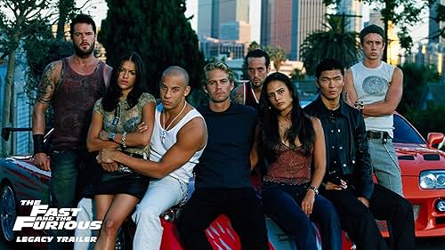
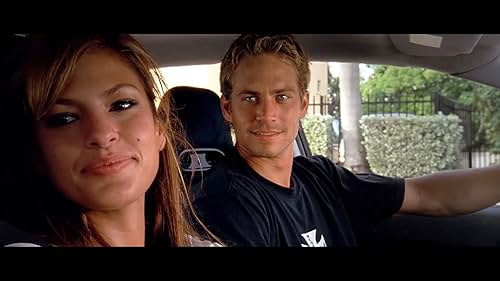
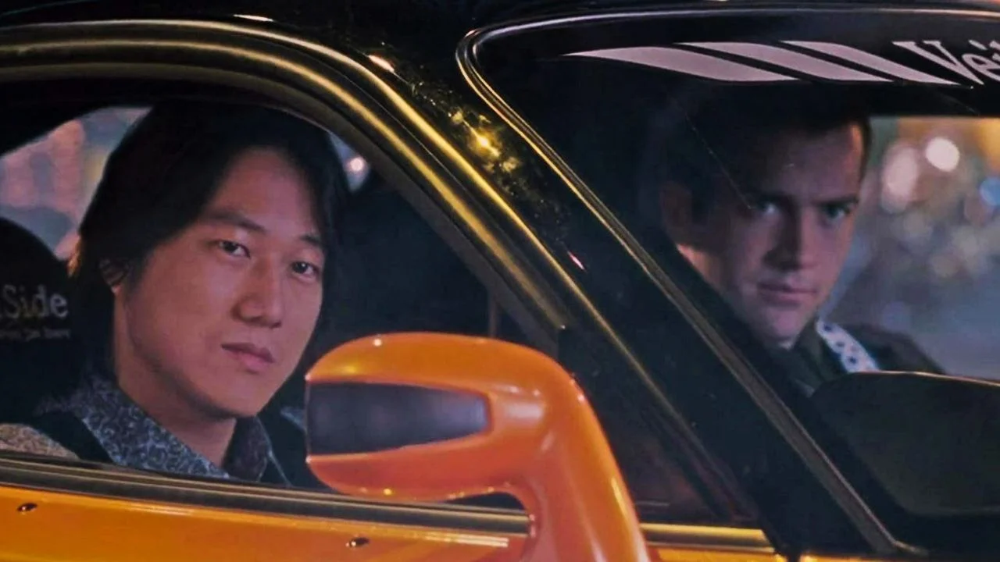
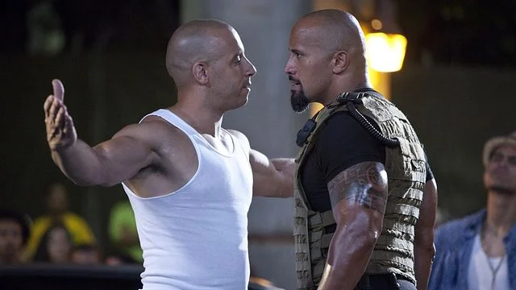
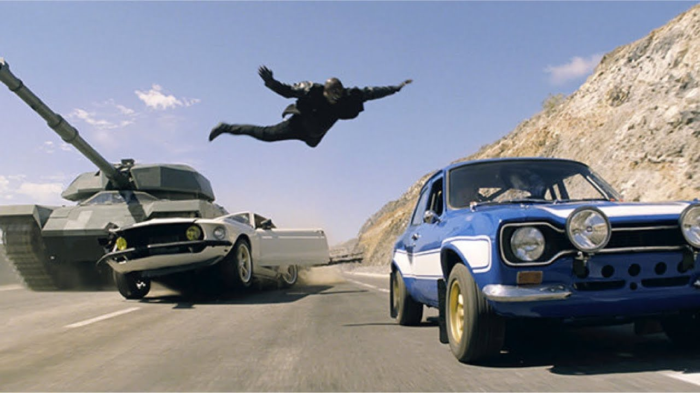

Velozes e Furiosos (2001)
O primeiro filme da franquia apresentou Brian O'Conner, um policial infiltrado no mundo das corridas de rua. O icônico Toyota Supra laranja se tornou um símbolo.

+ Velozes + Furiosos (2003)
Brian se muda para Miami e participa de corridas ilegais com Roman Pearce. O Nissan Skyline GT-R azul é o carro principal desta sequência.

Velozes e Furiosos: Desafio em Tóquio (2006)
A história se passa no Japão e foca em Sean Boswell e nas corridas de drift. Han aparece pela primeira vez neste filme cheio de manobras.

Velozes e Furiosos 4 (2009)
Dominic Toretto e Brian O'Conner voltam a unir forças para enfrentar um traficante. O Chevrolet Chevelle preto de Dom rouba a cena.

Velozes e Furiosos: Operação Rio (2011)
O quinto filme se passa no Rio de Janeiro, com um assalto épico e cenas de ação eletrizantes. O cofre sendo arrastado pelas ruas é inesquecível.

Velozes e Furiosos 6 (2013)
A equipe se reúne em Londres para derrubar um grupo de mercenários. O filme tem cenas com tanque de guerra e um avião explodindo na pista.